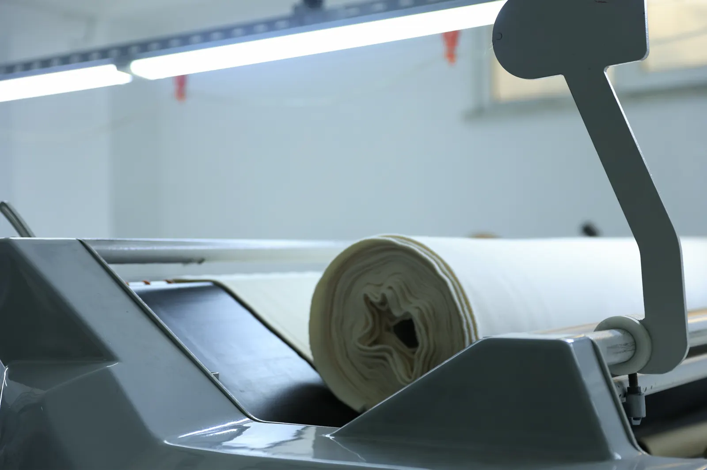

INTEGRATED TEXTILE PRODUCTION
From our fabric
to your next collection.
We turn your idea into a finished garment through fabric development, sampling and production under one connected approach.
Your vision, made tangible.
A design arrives as an idea. We develop the fabric, shape and details, build the sample and move the approved product into production.
At Tandoğdu Tekstil, the material and the garment are never separate conversations. Making our own fabrics gives us more control over quality, development and commercial decisions that matter to your collection.

The fabric begins
with us.
We produce our own fabrics. That direct involvement lets us align material choices with the garment from the start and offer a more efficient path to a competitive product.
Inside our productionWhy our own fabric matters.
Murat Tandoğdu explains how producing fabric ourselves helps us manage the product and build a more competitive offer for customers.
MURAT TANDOĞDU · FABRIC & VALUEMore than a production line.
The work moves across development, decoration, making and finishing—always guided by the approved sample.


From your reference
to a real product.
Send a design or visual. We develop a sample, refine the print and details, review fabric tests, confirm the production sample, then move into manufacturing.
See the full processResponsive by design.
With fabric and garment decisions close together, suitable projects can move quickly. A two-week turnaround is possible, with timing agreed for each brief.


See what the work
becomes.
Our showroom brings materials, pieces and product ideas together. It is a place to discuss the details that give a collection its character.
Enter the showroomLet’s build what comes next.
From first visual to finished piece, we are ready to talk through your brief.